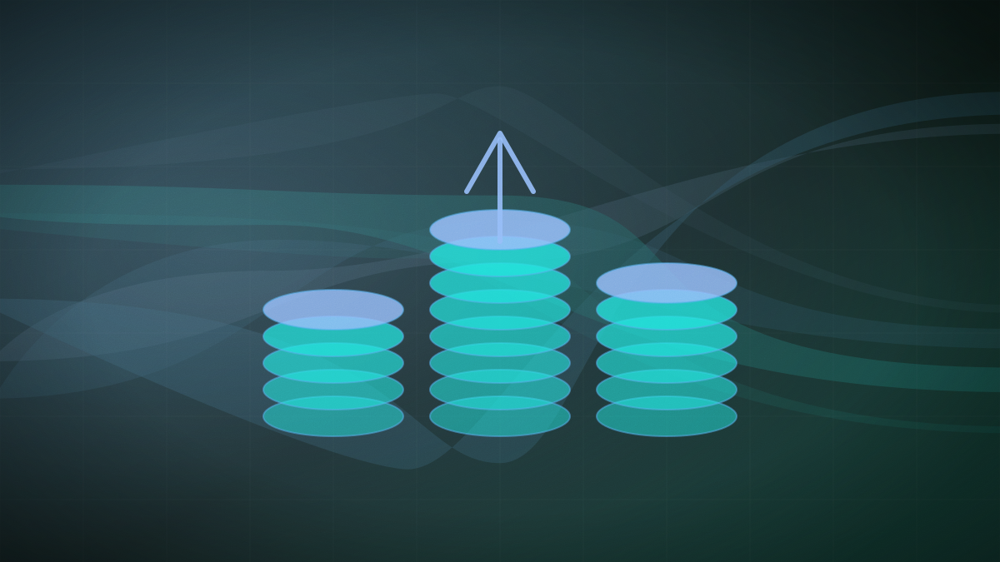

AfterQuery achieves $3.2 billion valuation as Y Combinator's fastest-ever unicorn
The training-data startup has reportedly grown its valuation tenfold in just five months, fueled by a $100 million revenue run rate and demand for high-quality human reasoning data.

Original cover art, generated for this story. THE VISSION does not republish third-party press imagery.
- AI training-data startup AfterQuery has reportedly reached a $3.2 billion valuation, only five months after raising a $30 million Series A at a $300 million valuation, according to TechCrunch.
- The company, founded 18 months ago by two founders aged 22 and 23, reported an annualized revenue run rate of $100 million as of April 2026.
- AfterQuery specializes in hiring professional practitioners (doctors, lawyers, etc.) to encode their decision-making and task-execution processes, counting Nvidia and Motif Technologies as clients.
AI model-training startup AfterQuery has reportedly reached a $3.2 billion valuation following a new, unannounced funding round, TechCrunch reported on September 1, citing initial reporting from Forbes. The valuation marks a tenfold increase from the startup's $30 million Series A in April 2026, which valued it at $300 million, making AfterQuery the fastest-ever startup to reach unicorn status in Y Combinator's history.
The company was founded just 18 months ago by two founders, currently aged 22 and 23, who participated in the Y Combinator Winter 2025 cohort. Despite its young age, the startup reported an annualized revenue run rate of $100 million as of April, reflecting the intense enterprise demand for high-quality, specialized training data to refine frontier and agentic models.
Unlike competitors focused solely on labeling accuracy, AfterQuery differentiates itself by 'encoding the patterns, decisions, and reasoning of the world's best practitioners,' employing specialists such as doctors, lawyers, and engineers to train AI models on how professionals actually perform complex tasks. The startup's client roster reportedly includes hardware giant Nvidia, enterprise firm Legora, and Korean AI research lab Motif Technologies. AfterQuery did not immediately comment on the reported funding round.
A $3.2 billion valuation on a $100 million run rate is a trailing indicator that the most valuable commodity in the AI industry is no longer raw scrapeable text, but the structured reasoning of highly skilled human experts. The record-breaking speed of this round shows that venture capital is willing to pay record-high premiums for companies that can package professional human decision-making into formats that autonomous agents can ingest and emulate.
Will AfterQuery confirm or deny the valuation and details of the reported $3.2 billion funding round?
Still open. When the paper finds out, it will say so here and on the open questions page — including if it got this wrong.